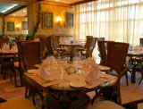
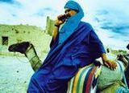

Современных туристов
мифами не удивишь, поэтому Греция всесторонне развивает
инфраструктуру туризма на материковой и островной территориях.
О перспективах и потенциале греческого направления в
преддверии горячего сезона рассказывает Дмитрий АРУТЮНОВ,
генеральный директор компании «Арт-тур».
>>

Человек в год выпивает в
среднем 150 литров чая. Несмотря на внушительный возраст чая,
причины высокой популярности этого напитка остаются загадкой и
по сей день. Чтобы узнать их и разобраться до конца в том, что
же такое чай, как и когда его пить, команда Foresta Tropicana
Hotel решила провести «ВклюЧАЙ фестиваль» - добрый семейный
праздник за чашечкой чая.
>>

У каждого из нас есть
любимый фотоальбом, в котором хранятся фотографии,
напоминающие о самых ярких моментах нашей жизни. И, конечно
же, в этом альбоме, есть хроника наших путешествий. Как
здорово, пролистать его снова и снова и еще раз окунуться в
свои впечатления о веселых каникулах и пофантазировать о
предстоящем отпуске!
>>

Растущая популярность
марокканского направления среди российских туристов вполне
объяснима – природа, великолепный климат и пляжи Атлантики
(воздух с высоким содержанием йода), большой выбор отелей с
развитой инфраструктурой на лучшем курорте побережья в городе
Агадир. Наиболее престижные гостиницы – Dorint Atlantic Palace
5*, Palais des Roses 5*, Agadir Beach Club 4*, Riu Tikida
Dunas 4*, Iberostar 4*.
>>
